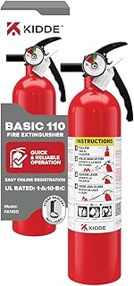
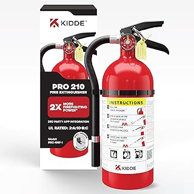
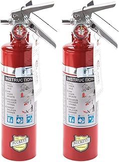
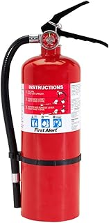

← kitchenfireextinguisher.com
No-BS Kitchenfireextinguisher Guide for 2026
May 2026
Whether you're upgrading or buying your first, the right kitchenfireextinguisher in 2026 comes down to a few factors most buyers overlook.
Where Most Go Wrong
- Going with the cheapest option — Budget kitchenfireextinguisher cut corners. Spending 20% more often gets something that lasts 3x longer.
- Not measuring — "It looked bigger online" is the #1 return reason for kitchenfireextinguisher. Measure twice.
- Waiting for the perfect deal — If you need kitchenfireextinguisher now, buy now. A 10% discount in 3 months costs you 3 months of use.
- Ignoring the fine print — Some kitchenfireextinguisher listings look great until you realize key parts are sold separately.
Quick Tips Before You Buy
- Set a firm budget before browsing. It's easy to creep up $50-100 comparing kitchenfireextinguisher features.
- The 3-star reviews are gold. They're usually the most balanced and honest takes on kitchenfireextinguisher.
- The Q&A section on kitchenfireextinguisher listings often answers questions that no review covers.
- Between two options? Go with the one that has more reviews. Volume of feedback matters for kitchenfireextinguisher.





Top Picks Right Now
⭐ 4.7
⭐ 4.7 · $57.40
⭐ 4.7 · $87.00
⭐ 4.6 · $54.97
⭐ 4.7 · $26.47
What It Comes Down To
The kitchenfireextinguisher space keeps improving, and 2026 is a solid time to buy. See our full rankings at kitchenfireextinguisher.com for side-by-side comparisons.
Affiliate Disclosure: As an Amazon Associate, we earn from qualifying purchases. This doesn't affect our recommendations.
 Kidde FA110 — Consistently rated
Kidde FA110 — Consistently rated Kidde Pro 210 — Editor's pick
Kidde Pro 210 — Editor's pick Buckeye 13315 — Best seller
Buckeye 13315 — Best seller First Alert PRO5 — Great value
First Alert PRO5 — Great value